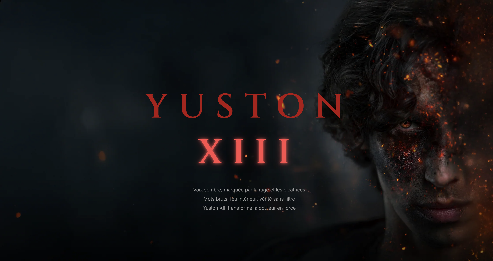

Poser l’ambiance
Un fond sombre et une image d’intro pour donner l’identité du site dès l’accueil.
 Léo
Télécharger mon CV
Léo
Télécharger mon CV
Un site web non officiel pour l’artiste YUSTON XIII : une ambiance sombre, sa biographie, ses titres et un formulaire de contact qui envoie vraiment les messages.

Je voulais un site qui ressemble à l’univers de l’artiste : sombre, avec une intro en image qui donne le ton dès l’arrivée.
C’est un projet non officiel, créé pour m’entraîner à construire un site complet, avec plusieurs pages qui se répondent entre elles.
Un fond sombre et une image d’intro pour donner l’identité du site dès l’accueil.
Biographie, liste de titres et pages dédiées (Blind Test, ombre, tournée), reliées par un menu simple.
Un formulaire relié à EmailJS pour recevoir les messages, sans avoir à gérer de serveur.
Reprise du code avec des balises plus claires et plus propres, pour un site plus facile à maintenir.
← Tous les projets Projet suivant : Chopard → Me contacter →